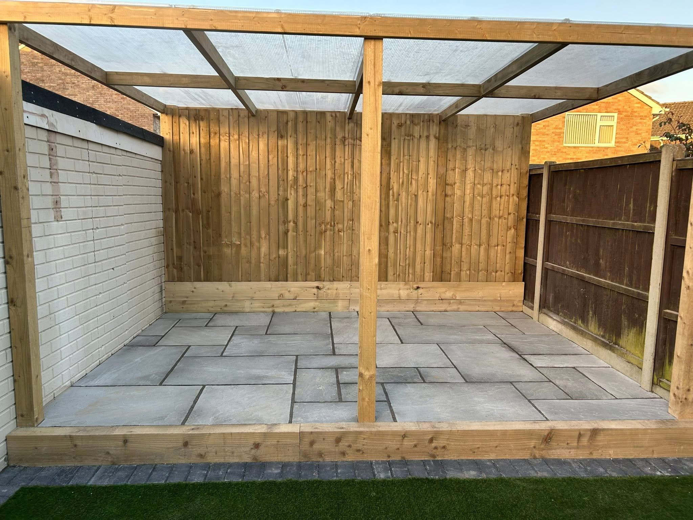
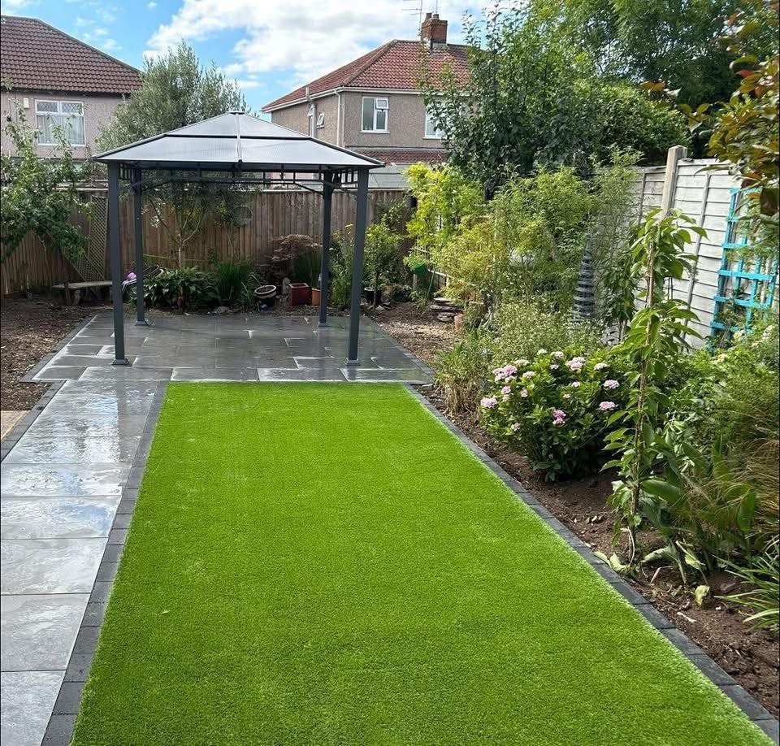
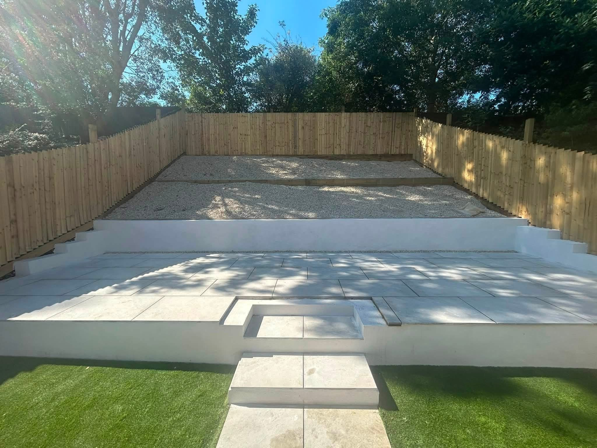
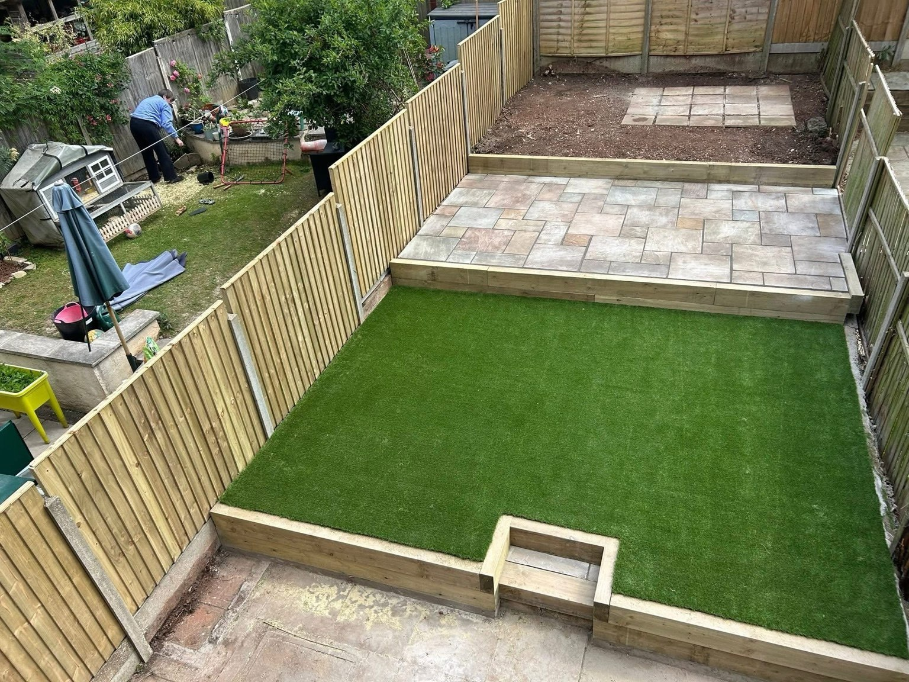
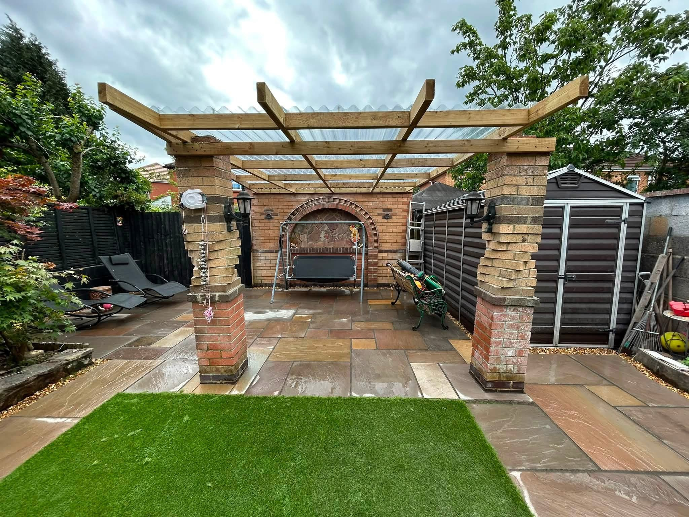
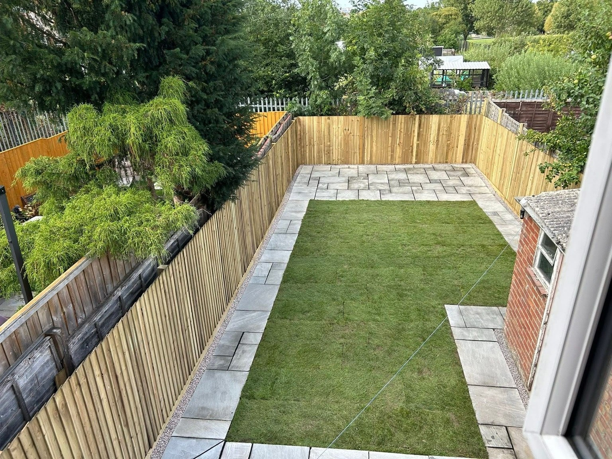

Bristol · Fencing, Decking & Pergolas in Bristol
Fencing, Decking & Pergolas in Bristol
Fencing repairs and installation, decking and timber garden features in Bristol. View GNA Landscapes projects with shelters, screens and boundaries.
Fencing, Decking & Pergolas in Bristol
Fencing, Decking & Pergolas in Bristol
Timber can define a boundary or create a distinct place to relax. GNA Landscapes offers fencing and decking in Bristol, with the project portfolio also showing timber shelters, pergola-style structures and garden screening. Tell us what the feature needs to do and how it will sit within the space.
Discuss the boundary and its surroundings
For fencing, explain which sections need attention, whether you are considering repairs or replacement and how access works. Photographs along the boundary help show nearby planting, existing posts and level changes.
Frame a place to spend time outdoors
The photographs show covered timber structures above paving, including one on brick pillars and another with slatted screening. Share ideas for the seating area, surface and structure together, including any decking you would like to discuss.
Request a quote →
Patios & paving & Garden landscaping
A considered finish, from edge to edge.
Paving meets lawn. Steps connect levels. Timber frames a place to sit. Explore the details in our recent garden projects.
Discuss your project →

RECENT WORK
Fencing, Decking & Pergolas in Bristol in pictures.
Fencing repairs and installation, decking and timber garden features in Bristol. View GNA Landscapes projects with shelters, screens and boundaries.


Bristol
Bristol gardens.
Built around you.
GNA Landscapes is a Bristol landscaping business with projects spanning paved seating areas, lawns, timber boundaries and garden structures. Tell us about your property, the ideas you have and the way you want to use the space.
Contact the team to discuss your location and plans.
Patios, paths, lawns and timber features within the same garden.
Call, email or send a project enquiry through WhatsApp.
GOOD TO KNOW
Your questions answered.
Do you offer fencing repairs?
Yes. GNA Landscapes lists both fencing repairs and new installation. Send photographs and explain which sections need attention.
Can I enquire about decking?
Yes. Describe the proposed location, approximate size and how you want it to connect with the house or garden.
Can a timber feature be combined with paving?
The project photographs show timber shelters over paved areas. Include the surrounding patio and landscaping in your enquiry.
REQUEST A QUOTE
Tell us what you have in mind.
Send the details of your project and its location. WhatsApp opens with your enquiry ready to send, where you can also attach photos.
GNA Landscapes
Ready to discuss your project?
Bristol